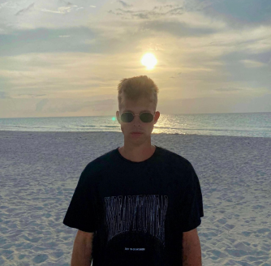

My Social Media
+7(977)865-08-51
EN RU

Alexey Kovalchuk, 22
Analyst, Tutor, MarketingHello, I’m Alexey! 👋
On this page you can find my social networks and get acquainted with my cases in a convenient format.
Now I specialize in three areas: tutoring, marketing and IT sector.
WORK EXPERIENCE
OYSTER
Middle marketing manager / USA / 2020 – PresentTutoring
freelancer / Russia / 2017 – PresentI teach mathematics, physics, computer science and programming, as well as related fields. I teach higher mathematics, algorithms and data analysis. Participated in writing a manual on algorithms for schoolchildren, worked in the Association of Olympiad Winners and created educational projects together with Yandex.
I work with students of different levels, I systematically attract clients through the built marketing channels. I work individually and with groups. I do everything online.
Tinkoff
Jr. Risk Analyst / Moscow, Russia / 2019 – 2019
Jr. Business Analyst / Moscow, Russia / 2018 – 2018